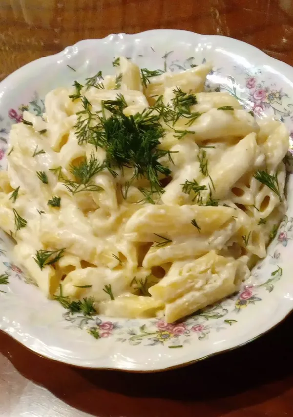

Odin Recipes
White sauce pasta with chicken

This classic and comforting dish combines pasta, tender chicken pieces, and a rich, creamy béchamel sauce. Easy
to prepare and perfect for a quick dinner, it blends the vibrant flavors of chicken and spices with the smooth
texture of the sauce.
the components
- 1/4 kg penne pasta
- Chicken breast
- 3 tablespoons of flour
- 2 cups of milk
- 2 cups of water
- one teaspoon of garlic
- Grated Romano cheese
- Mozzarella cheese
- Salt, pepper, and onion powder
Preparation method
- Boil the pasta and set aside.
- Cut the chicken into small pieces and season it with salt, pepper and onion powder. Leave it for at least an
hour.
- In a saucepan with ghee, fry the chicken over the fire, then take it out and set it aside.
- Brown the flour in the ghee with the garlic, then add the milk and water, stirring continuously until it
thickens. Then add some of the cheese and stir until it forms a somewhat thick consistency.
- Then add the pasta and chicken and stir.
- Place the mixture in a tray, sprinkle the top with cheese, and put it in the grill until the top turns
brown.
- And here you go ♥️
See more delicious Odin recipes